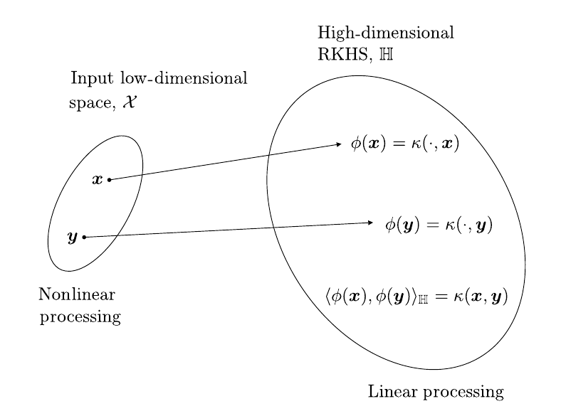

layout: true <div class="my-header"> <p class="align_left"><img src="images/yonsei_logo.png" style="height: 30px;"/></p> <p class="align_right"><b>RKHS and kNN smoother</b></p> </div> <div class="my-footer"> <p class="align_right"><b>2021.07.30 ML Study</b></p> <p class="align_left"><b>Tae Geun Kim</b></p> </div> --- class: center, middle # Kernel Smoothing Method <h4 style="color:brown">Part 1 : RKHS and kNN smoother</h4> <h3 style="color: darkblue">Tae Geun Kim</h3> --- ## Table of Contents -- * What is the Kernel? -- * Reproducing Kernel Hilbert Space -- * kNN Smoother --- class: center, middle # What is the Kernel? --- ### Start with Integral Transform An integral transform is any transform `\(\small T\)` of the following form: $$(Tf)(x) = \int_{t_1}^{t_2} f(t) K(t, x) dt$$ -- * `\(\small K: \mathbb{R} \times \mathbb{R} \rightarrow \mathbb{R}\)` is called the kernel function or integral kernel. -- We already know some famous kernels. 1. Identity : `\(\small K(t, x) = \delta(t - x)\)` 2. Path Integral : `\(\small \displaystyle \left(i\hbar \frac{\partial}{\partial t} - H \right) K(x,t;x_i,t_i) = i\hbar \delta(x-x_i)\delta(t-t_i)\)` 3. Green function : `\(\small L [G(x, t)] = \delta(x-t)\)` --- ### Start with Integral Transform If `\(\small f,\,K(\cdot, x) \in L^2(\mathbb{R})\)` then, we can rewrite integral transform as follows. $$ (Tf)(x) = \int f(t) K(t,x) dt = \langle f, K(\cdot, x) \rangle_{L^2} $$ -- We want to find **Reproducing Kernel** `\(\small K\)` such that $$ f(x) = \langle f,\, K(\cdot, x) \rangle_{L^2} $$ -- In this case, we already know the Reproducing Kernel. $$ K(t,x) = \delta(t - x) $$ But `\(\small \delta(x)\)` is not measurable, so it is not in `\(\small L^2(\mathbb{R})\)`. Thus, let's introduce **Reproducing Kernel Hilbert Space (RKHS)**. --- class: center, middle # Reproducing Kernel Hilbert Space --- ### RKHS The definition of **RKHS** is as follows. <div class="animated-border-quote"> <blockquote> <p> Let $\small \chi$ be a set, $\small \mathcal{H}$ be a Hilbert space on $\small \chi$. $\small \mathcal{H}$ is called RKHS on $\small \chi$ if the evaluation functional $\small E_x: \mathcal{H} \rightarrow \mathbb{R}$ defined by $\small E_x(f) = f(x)$, is bounded $\small \forall x \in \chi$. </p> </blockquote> </div> -- From the definition, we can derive some properties of `\(\small E_x\)` 1. **Linearity** : `\(\small E_x(f+\alpha g) = (f+\alpha g)(x) = f(x) + \alpha g(x) = E_x(f) + \alpha E_x(g)\)` 2. **Continuous** : Bounded linear operator between two normed vector spaces is continuous. > `\(\small \lVert E_x \rVert_{\mathcal{H}} = \text{sup}\{ \lVert E_x (y) \rVert : \lVert y \rVert < 1 \} \)` is bounded `\(\small \Longleftrightarrow\)` > `\(\small \exists M < \infty\)` s.t. `\(\small \lVert E_x (y) \rVert \leq M \lVert y \rVert \Rightarrow \lVert E_x(y_1 - y_2) \rVert \leq M\lVert y_1 - y_2\rVert\)` --- ### RKHS We use an important theorem in Hilbert space - **Riesz Representation Theorem**. <div class="animated-border-quote"> <blockquote> <p> Let $\small \mathcal{H}$ be a Hilbert space and $\small \mathcal{H}^*$ be its dual space. For every continuous linear functional $\small \varphi \in \mathcal{H}^*$, $\small \exists! f_\varphi \in \mathcal{H}$ s.t. $$\varphi(g) = \langle f_\varphi, g\rangle_\mathcal{H} \quad \forall g \in \mathcal{H}$$ </p> </blockquote> </div> -- Since we proved that continuity of `\(\small E_x \in \mathcal{H}^*\)`, `\(\small \exists! K_x \in \mathcal{H}\)` s.t. $$\small E\_x(f) = f(x) = \langle K\_x , \, f\rangle\_\mathcal{H}$$ And since `\(\small K_x\)` also belongs to `\(\small \mathcal{H}\)`, $$\small E\_y(K\_x) = K\_x(y) = \langle K\_y, \,K\_x\rangle\_\mathcal{H}$$ --- ### RKHS Now, define `\(\small K: \chi \times \chi \rightarrow \mathbb{R}\)` such that $$\small K(x,y) \equiv K\_x(y) = K\_y(x) = \langle K\_x, \,K\_y\rangle\_\mathcal{H}$$ -- Then for all `\(\small f \in \mathcal{H}\)`, there exists `\(\small K\)` such that $$\small f(x) = \langle f, \,K\_x\rangle\_\mathcal{H} = \langle f, \, K(\cdot,x)\rangle\_\mathcal{H}$$ `\(\small K\)` is called **Reproducing Kernel**. ----- -- **Notation** * `\(\small \mathcal{H}_K\)` : RKHS equipped with `\(\small K\)` as Reproducing Kernel. * `\(\small K(\cdot, x) : \chi \rightarrow \mathbb{R}\)` defined as `\(\small K(y,x) = K_x(y)\)` * `\(\small \langle \cdot, \cdot \rangle_{K} \equiv \langle \cdot, \cdot \rangle_{\mathcal{H}_K}\)` * The map `\(\small \phi : \chi \rightarrow \mathcal{H}_K\)` s.t. `\(\small \phi(x) \equiv K(\cdot, x)\)` is called feature map. --- ### Kernel Trick We can write the inner product of feature maps as kernel evaluation. $$\small \langle \phi(x), \phi(y) \rangle\_K = K(x, y)$$ It means, we can perform inner product in `\(\small \mathcal{H}_K\)` in a very efficient way; via a function evaluation performed in the original low-dimensional space. -- This property is also known as the **kernel trick**, and it facilitates significantly the computations. .center[  ] --- ### Kernel Trick In practice, we use the kernel trick as the following steps. -- 1. Map (implicitly) the input training data to an RKHS. $$\small x_i \rightarrow \phi(x_i) \in \mathcal{H}\_K,\quad n = 1,2,\cdots,N$$ -- 2. Solve a linear estimation task in `\(\small \mathcal{H}_K\)`, involving the images `\(\small \phi(x_i)\)`. -- 3. Cast the algorithm that solves for the unknown parameters in terms of inner product operations. $$\small \langle \phi(x\_i), \phi(x\_j) \rangle,\quad i,j = 1,2,\cdots,N.$$ -- 4. Replace each inner product by a kernel evaluation. $$\small \langle \phi(x\_i), \phi(x\_j) \rangle = K(x\_i, x\_j)$$ --- ### Property of RKHS **1.** `\(\small K\)` is positive semi-definite. -- .center[ <div class="animated-border-quote"> <blockquote> <p> $$\small \sum_{i,j} c_i c_j K(x_i, x_j) = \sum_{i,j} c_i c_j \langle K_{x_i},\,K_{x_j}\rangle_{K} = \langle \sum_i c_i K_{x_i},\sum_j c_j K_{x_j}\rangle = \lVert \sum_{i=1}c_i K_{x_i}\rVert^2_K $$ </p> </blockquote> </div> ] -- **2.** The span of the set `\(\small \{ K_x | x \in X \}\)` is dense in `\(\small \mathcal{H}_K\)`. .center[ <div class="animated-border-quote"> <blockquote> <p> Let $\small H_0 = \text{span} \{ K_x | x \in X \}$. Then we define an inner product $\langle\,,\,\rangle_{H_0}$ as $$\small \langle f, g\rangle_{H_0} = \sum \alpha_i \beta_j K(x_i,t_j) \quad \text{for} \quad f=\sum_i \alpha_i K_{x_i},~g=\sum_j \beta_j K_{t_j} $$ (Continued) </p> </blockquote> </div> ] --- ### Properties of RKHS .center[ ] --- ### Properties of RKHS .center[ ] <br/> It shows that `\(\small \mathcal{H}_K\)` can be constructed by all possible linear combinations of the kernel function computed in `\(\small \chi\)`, as well as the limit points of sequences of such combinations. `\(\small \Rightarrow\)` `\(\small \mathcal{H}_K\)` can be fully generated from the knowledge of `\(\small K(\cdot,\cdot)\)` --- ### 5.8.1 Model as span of Kernel * We can write for any `\(\small \displaystyle f \in \mathcal{H}_K,~~ f(x) = \sum_m \alpha_m K(x, y_m)\)` -- * Sps `\(\small K\)` has an eigen-expansion : $$\small K(x,y) = \sum\_{i=1}^\infty \gamma\_i \phi\_i(x) \phi\_i(y) \quad \text{with} \quad \gamma_i \geq 0,~~\sum \gamma_i^2 < \infty$$ -- Then we can re-write `\(\small f\)` as : $$\small f(x) = \sum\_{i=1}^\infty c\_i \phi\_i(x) \quad \text{where} \quad c\_i = \gamma\_i \sum\_m \alpha\_m \phi\_i(y_m)$$ -- * Then the norm `\(\small \lVert f \rVert_{K}\)` is as follow. $$\small \begin{aligned} \langle f, f \rangle\_K &= \sum\_m \sum\_n \alpha\_m \alpha\_n K(y\_m, y\_n) = \sum\_{i=1}^\infty \gamma\_i \sum\_m \alpha\_m\phi\_i(y\_m) \sum\_n \alpha\_n \phi\_i(y\_n) \\\\ &= \sum\_{i=1}^\infty \frac{c\_i^2}{\gamma\_i} < \infty \qquad (\text{since }\mathcal{H}_K\text{ is Hilbert space.}) \end{aligned}$$ --- ### 5.8.1 Representer thm Then we can rewrite a general form of regularization problems as follows. $$\begin{aligned} &\underset{f \in \mathcal{H}\_K}{\text{min}} \left[ \sum\_{i=1}^N L(y\_i,\,f(x\_i)) + \lambda \lVert f \rVert\_{K}^2\right] \\\\ \\\\ \Rightarrow ~&\underset{\left\\{ c\_j \right\\}\_{j=1}^\infty}{\text{min}} \left[ \sum\_{i=1}^N L(y\_i,\, \sum\_{j=1}^\infty c\_j \phi\_j(x\_i) ) + \lambda \sum\_{j=1}^\infty \frac{c\_j^2}{\gamma_j} \right] \end{aligned}$$ -- Surprisingly, the solution has finite-dimensional form. $$f(x) = \sum\_{i=1}^N \alpha\_i K(x, x\_i)$$ It is called the **Representer theorem**. --- ### 5.8.1 Proof of Representer thm .center[ ] --- ### 5.8.1 Consequence of Representer Thm Since the solution has finite form, so does `\(\small J(f)\)` : $$J(f) = \lVert f \rVert\_K^2 = \sum\_{i,j}^N \alpha\_i \alpha\_j K(x\_i, x\_j)$$ -- Then we can re-write regularization problems as Vector notation : $$\underset{\mathbf{\alpha}}{\text{min}} \left[ \mathcal{L}(\mathbf{y}, \mathbf{K\alpha}) + \lambda \mathbf{\alpha}^T \mathbf{K\alpha} \right]$$ * `\(\mathbf{K}\)` is called a **Gram matrix**. -- Thus, we can reduce infinite dimensional problem to finite dimensional optimization problem. It is called *Kernel property* in the literature on SVM. --- ### 5.8.2 Examples of RKHS We can solve Penalized Least Square (PLS) with RKHS. $$\small\underset{\mathbf{\alpha}}{\text{min}} \left[ (\mathbf{y} - \mathbf{K\alpha})^T(\mathbf{y} - \mathbf{K\alpha}) + \lambda \mathbf{\alpha}^T\mathbf{K\alpha} \right]$$ -- As same as *Ridge*, we can get the solution. $$\small \begin{gathered} \hat{\mathbf{\alpha}} = (\mathbf{K} + \lambda \mathbf{I})^{-1} \mathbf{y} \\\\ \hat{\mathbf{y}} = \mathbf{K}\hat{\alpha} = \mathbf{K}(\mathbf{K} + \lambda \mathbf{I})^{-1} \mathbf{y} = (\mathbf{I} + \lambda \mathbf{K}^{-1})^{-1} \mathbf{y} \end{gathered}$$ ----- -- **List of some famous kernels** * Gaussian RBF : `\(\small K(x, x_m) \equiv K_m(x) = e^{-\nu \lVert x - x_m \rVert^2}\)` * Thin plate spline : `\(\small K(x, y) = \lVert x - y \rVert^2 \log{(\lVert x - y\rVert)}\)` * Laplacian kernel : `\(\small K(x, y) = e^{-t \lVert x - y \rVert }\)` --- class: middle, center # kNN Smoother --- ### 6.1 1D Kernel Smoothers First, we use `\(\small k\)`-nearest-neighbor average to regress function : $$\small \hat{f}(x) = \text{Ave}(y\_i | x\_i \in N\_k(x))$$ -- But the average leads to a discontinuity which is ugly and unnecessary. -- Rather than give all the points in the neighborhood equal weight, we can assign weights that die off smoothly with distance from the target point. -- For this, we use **Nadaraya-Watson kernel-weighted average** $$\small \hat{f}(x) = \frac{\sum\_{i=1}^N K\_\lambda (x, x\_i) y\_i}{\sum\_{i=1}^N K\_\lambda(x,x\_i)}$$ .center[ ] --- ### References * T. Hastie et al., *The Elements of Statistical Learning 2nd ed*, Springer (2009) * F. Cucker et al., *Learning Theory: An Approximation Theory Viewpoint*, Cambridge (2007) * S. Theodoridis, *Machine Learning A Bayesian and Optimization Perspective 2nd ed*, Academic Press (2020) * D. Sejdinovic et al., *What is an RKHS?*, (2014) * F. Luef, *HILBERT SPACES* * Febian et al., *Functional Analysis and Infinite-Dimensional Geometry*, Springer (2001) --- class: center, middle # Thank you!